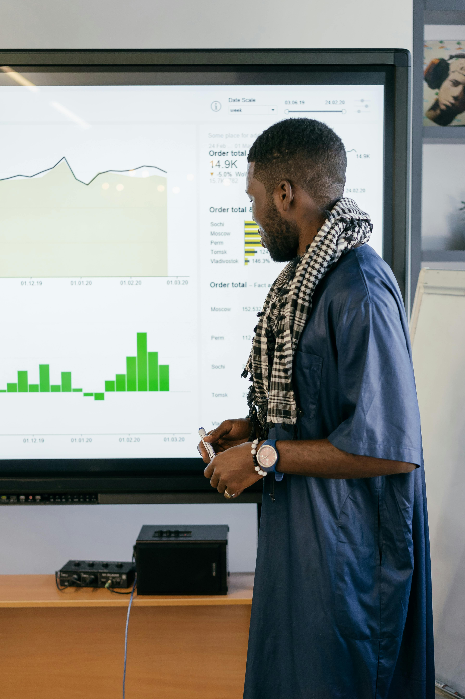
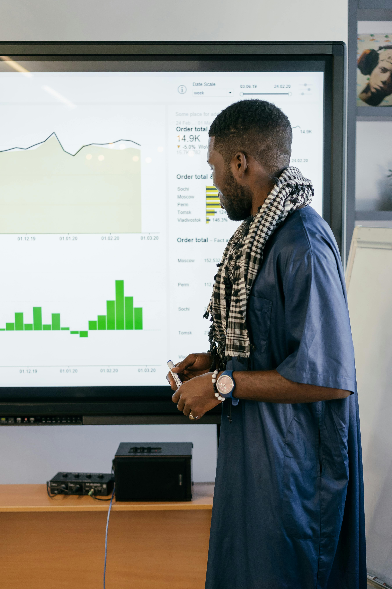
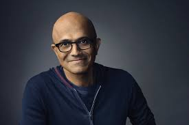

History of TechCon
TechCon was founded in 2010 with the purpose of bringing together founders in technology enthusiasts, professionals and innovators around the world.
From its humble beginnings, TechCon has consistently grown, attracting thousands of participants annually. Each year we aim to provide a platform for new ideas, ground breaking research and networking opportunities.
 

Our Mission
Our mission at TechCon is to inspire and connect the tech community, foster innovation, and create opportunities for collaboration. We believe in the power of technology to transform lives and industries.
Through our diverse range of sessions, workshops, and networking events, we aim to empower attendees to push the boundaries of what is possible in the tech world.


Elon Musk
Elon Musk, the CEO of X and Tesla, shared his insights on the future of space travel and sustainable energy at TechCon 2018. His visionary ideas continue to inspire many in the tech community.
Sheryl Sandburg
Sheryl Sandberg, COO of Facebook, addressed the importance of leadership and resilience in the fast-paced tech industry during her keynote at TechCon 2019.

Satya Nadella
In 2020, Satya Nadella, CEO of Microsoft, discussed the role of cloud computing and AI in shaping the future of technology. His session was one of the highlights of the conference.